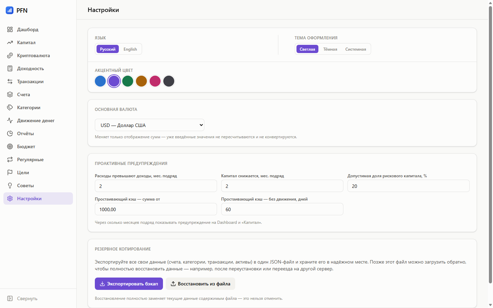

Оформление

Тема
Три режима: светлая, тёмная и системная — последняя следует за настройкой ОС и переключается на лету, без перезагрузки.
Тему можно менять и в самой системе: приложение подхватит изменение, если выбран системный режим.
Акцентный цвет
Шесть пресетов: синий, фиолетовый, зелёный, янтарный, розовый, графит. Акцент меняет кнопки, активный пункт меню, переключатели, фокус полей и ссылки.
Палитра графиков при этом не меняется. Эти восемь цветов подобраны под цветовую слепоту, и «перекрасить» их вместе с кнопками значило бы сделать отчёты нечитаемыми.
Язык
Русский и английский, переключатель — там же, в настройках. Выбор запоминается в браузере и применяется до первой отрисовки: вспышки «не той» темы или языка при запуске нет.
Где это хранится
Тема, акцент и язык — локальные настройки интерфейса, они живут в браузере приложения. Валюта — серверная настройка: от неё зависит, в чём создаются новые счёта и активы.